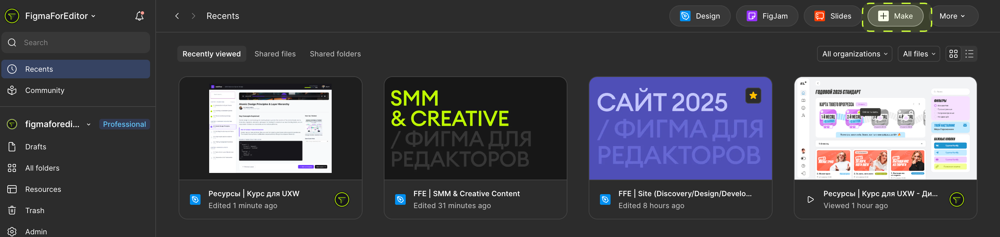
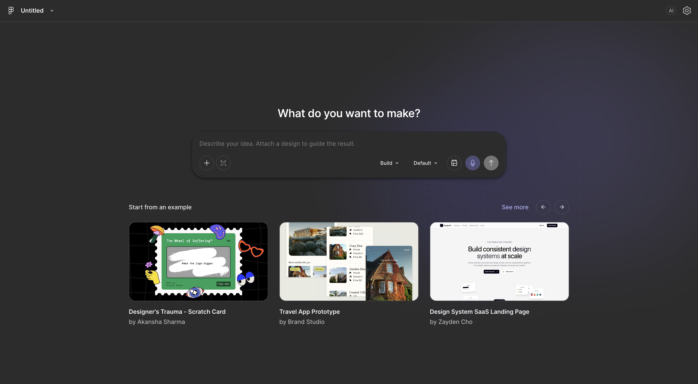
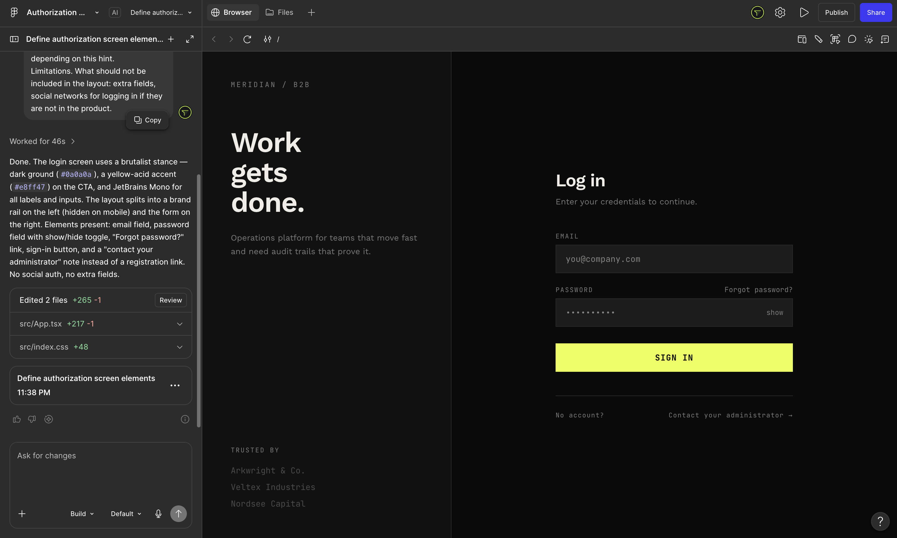
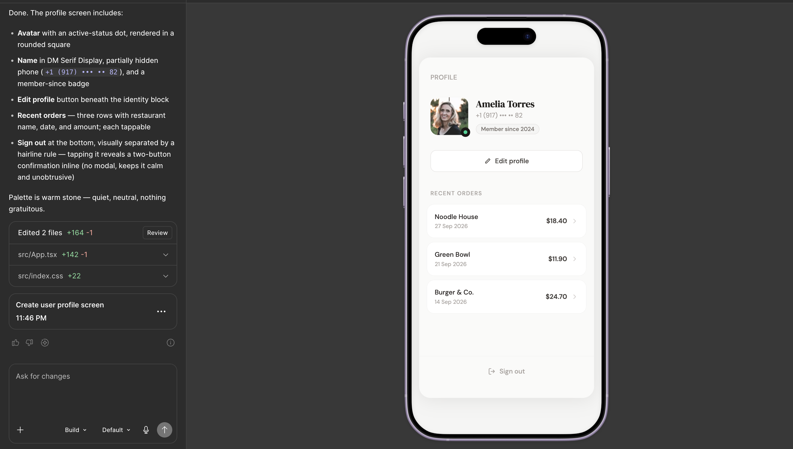
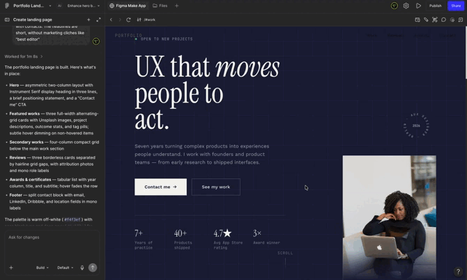
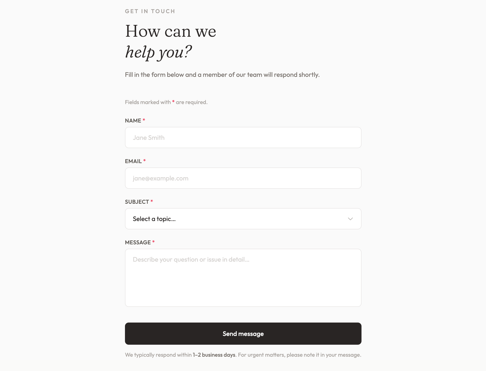

Как редактору писать промпты, которые дают полезный результат, а не случайный набор блоков, какие есть предсказуемые ограничения и, самое главное, как использовать сгенерированное как отправную точку для реальной работы, а не как готовое решение
Для UX-редактора ИИ — это не только инструмент «для дизайнеров», а расширение того же навыка, которым мы занимались весь курс — точной формулировки задачи и текста в интерфейсе, только теперь эта формулировка адресована не человеку-дизайнеру, а модели.
Как устроена генерация: промпт → структура → текст → визуал
Figma Make генерирует результат в несколько логических слоёв, даже если внешне это выглядит как один щелчок:
Структура — какие блоки вообще есть на экране (шапка, форма, кнопка, футер) и в каком порядке.
Контент — какой текст ложится в каждый блок: заголовки, лейблы полей, тексты кнопок, микротексты ошибок.
Визуальное оформление — отступы, цвета, шрифты, скругления, которые модель подбирает по умолчанию или по образцу, если вы его дали.
Для редактора важнее всего второй слой — контент. Структуру и визуал почти всегда придётся поправить руками под вашу систему, а вот текстовый черновик, если промпт был точным, может быть неожиданно близким к рабочему варианту — особенно для служебных текстов вроде подписей полей или сообщений об ошибке, у которых устоявшиеся формулировки.
Анатомия хорошего промпта для редакторской задачи
Сначала через главную зайдем в Make:

Нас встречает уже привычный вид чата:

Теперь надо разобраться как писать эти ваши промты. Слабый промпт вида «сделай экран входа» даёт случайный, обобщённый результат. Промпт редактора должен содержать те же элементы, что и любое хорошее ТЗ, потому что модель работает с ТЗ по тому же, что и люди, поэтому лучше запариться над промтом, чтобы не получить «Результат ХЗ», вот такую структуру можно использовать:
Тип экрана и его цель. «Экран авторизации для B2B-сервиса, цель — быстрый вход существующего пользователя».
Обязательные элементы. Поля, кнопки, ссылки, которые точно должны быть — по опыту курса это те же поля формы, атомы и молекулы.
Тон и голос. «Деловой, без лишней вежливости» или «дружелюбный, на «ты»» — модель ощутимо меняет формулировки в зависимости от этой подсказки.
Ограничения. Что не должно попасть в макет: лишние поля, соцсети для входа, если их нет в продукте.
Чем конкретнее промпт — тем меньше приходится вычищать за моделью потом. Теперь засунем этот промт в Make:

Мне кажется, что результат огонь, конечно нужно докрутить, но для 1 базового промта это неплохой результат(кстати, все кнопки, поля и ссылки интерактивные, состояния при нажатия отрабатывают, текста и статусы меняются)
Три примера промптов: экран, лендинг, форма

Промпт 1 — черновик экрана. «Сгенерируй экран профиля пользователя для мобильного приложения доставки еды. Нужны: аватар, имя, номер телефона (частично скрыт), список последних заказов (3 штуки с датой и суммой), кнопка "Редактировать профиль", кнопка "Выйти" внизу отдельно от остальных действий. Тон — нейтральный, без лишних восклицаний».

Промпт 2 — лендинг. «Сгенерируй лендинг для сайта-портфолио. Структура: хиро-блок с заголовком и кнопкой "Связаться со мной", блок с тремя лучшими работами, блок с отзывами от коллег и руководителей(3 карточки), блок с сертификатами и наградами (2 варианта), футер с контактами. Заголовки короткие, без маркетинговых клише.

Промпт 3 — форма. «Сгенерируй форму обратной связи из 4 полей: имя, email, тема обращения (выпадающий список из 3 вариантов), текст сообщения. Добавь текст под кнопкой отправки о сроке ответа. Обязательные поля отметь явно».
Обратите внимание: во всех трёх промптах редактор задаёт не только структуру, но и тон, и явные ограничения на формулировки — это ровно то место, где включается редакторская экспертиза, а не просто нейрослоп.
Ограничения: дизайн-система, тон голоса, реальные данные
Три предсказуемых ограничения, с которыми сталкивается любой, кто использует Figma Make на реальном проекте:
- Несоответствие дизайн-системе. Сгенерированный макет использует собственные, «средние по больнице» шрифты, цвета и отступы — не токены вашей библиотеки (модуль 3, урок 30). Это не инстансы ваших компонентов, а новая, независимая разметка, которую нужно либо пересобрать на своих компонентах, либо использовать только как референс структуры.
- Тон голоса «примерно попадает, но не точно». Даже с хорошим промптом текст обычно требует финальной редактуры — модель тяготеет к более «гладким», обобщённым формулировкам, чем реальный голос бренда.
- Данные не настоящие. Суммы заказов, имена, даты — правдоподобные, но случайные. Для финального макета их нужно заменить на реалистичные примеры из вашей предметной области (или на реальные данные, если работаете с продуктом).
Практический вывод: Figma Make хорош для скорости старта обсуждения, а не для финальной сдачи. Это черновик уровня «нулевой драфт», который экономит время на первом шаге, но не отменяет остальную работу редактора.
Как дорабатывать сгенерированный результат руками
Оцените структуру — подходит ли она вообще, или нужно перекроить порядок блоков. Замените визуальные элементы на реальные компоненты из вашей библиотеки, скопировав только текст из сгенерированного варианта. Отредактируйте текст под голос бренда и реальный контекст продукта. Проверьте отступы и выравнивание по вашей шкале — сгенерированные значения почти никогда не совпадают со стандартами.
По сути, Figma Make экономит именно тот этап, который обычно самый мучительный — «придумать хоть что-то на пустом холсте». Всё остальное — та же редакторская работа, что и всегда.
ПРАКТИКА — генерируем и сравниваем три варианта экрана
- Выберите один экран из своего учебного проекта (например, экран настроек или экран корзины).
- Сгенерируйте его в Figma Make тремя промптами: (а) максимально коротким и общим, (б) средним по детализации, (в) подробным — по образцу из урока, с тоном голоса и явными ограничениями.
- Сравните три результата: что изменилось в структуре, в тексте, в общем качестве черновика.
- Выберите лучший вариант и доработайте его текстовые блоки под голос вашего учебного продукта.
Домашнее задание:
- Сгенерируйте в Figma Make два разных экрана своего учебного проекта по подробным промптам (структура + тон + ограничения).
- Для каждого экрана зафиксируйте текстом, что пришлось поправить: структуру, текст, визуал — и почему.
- Перенесите текстовые формулировки, которые вам понравились, в реальный макет на своих компонентах.